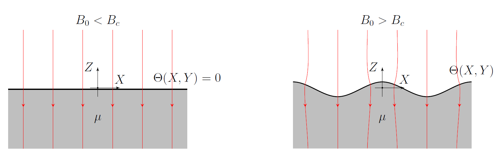
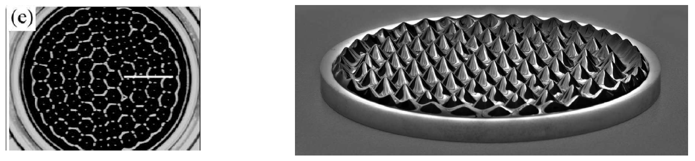
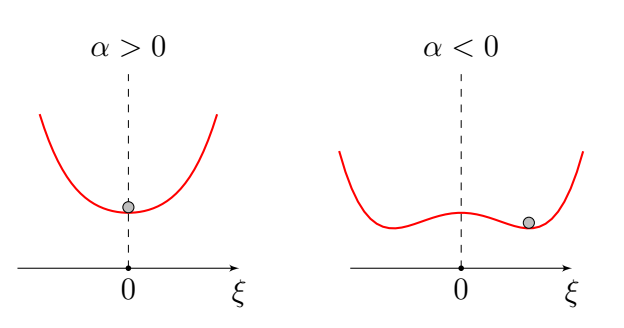

Y25 (2025) — English translation
Many physical systems have symmetry, that is, they do not change their properties under certain transformations, for example, when the system as a whole is rotated. In spontaneous symmetry breaking, the state of the system with minimum energy is less symmetrical than the system itself. Thus, for some ferromagnets, the energy does not depend on the direction of the magnetic moment, but in a magnetized state the magnetic moment is directed in a certain direction, which clearly sets the preferred direction. Spontaneous symmetry breaking often occurs during phase transitions, for example from a paramagnetic state to a ferromagnetic state. Also, symmetries and their breaking are important in particle physics. Ferromagnetic fluid (ferrofluid) is a fluid that is highly polarized in the presence of a magnetic field. Ferromagnetic liquids are colloidal systems consisting of ferromagnetic nanometer-sized particles suspended in a carrier liquid, which is usually an organic solvent or water. Throughout the problem, partial derivatives such as $\partial/\partial x$ are denoted as $\partial_x$. In particular, for some function $f$: $$ \frac{\partial f}{\partial x} = \partial_x f, \quad \frac{\partial f}{\partial y} = \partial_y f, \quad \frac{\partial f}{\partial z} = \partial_z f.$$
Ферромагнитная жидкость (феррофлюид) — жидкость, сильно поляризующаяся в присутствии магнитного поля. Ферромагнитные жидкости представляют собой коллоидные системы, состоящие из ферромагнитных частиц нанометровых размеров, находящихся во взвешенном состоянии в несущей жидкости, в качестве которой обычно выступает органический растворитель или вода.
В течение всей задачи частные производные, например $\partial/\partial x$ обозначаются, как $\partial_x$. В частности, для некоторой функции $f$:
$$ \frac{\partial f}{\partial x} = \partial_x f, \quad \frac{\partial f}{\partial y} = \partial_y f, \quad \frac{\partial f}{\partial z} = \partial_z f.$$
Let us consider an incompressible fluid with the following characteristics: density $\rho$, surface tension coefficient $\sigma$, magnetic permeability $\mu \neq 1$. In the vertical gravitational field $g$ this fluid fills the half-space $z<0$ under vacuum. After switching on a sufficiently large vertical uniform magnetic field $B_0$, its surface is distorted and becomes a function of the coordinates $\Theta (X,Y)$.

This process is called Rosenzweig instability and is due to the fact that when the magnetic field $B_0$ is higher than a certain $B_c$, the formation of peaks on the surface of the liquid is energetically favorable: the paramagnetic substance is drawn into the region of the local large field $B$, and on a sharp structure the local field $B$ in turn increases even more. The effect of field localization on sharp metal structures is well known for an electric field and manifests itself in this system due to the complete analogy between electrostatics and magnetostatics.
Knieling H. et al., 2007. Growth of surface undulations at the Rosensweig instability. Physical Review E—Statistical, Nonlinear, and Soft Matter Physics, 76(6), p.066301.

In the experiment at $B_0>B_c$, hexagonal lattices of $\Theta (X,Y)$ peaks are observed as an equilibrium state. This effect can be considered as the parametric crystallization of a two-dimensional liquid into a two-dimensional crystal. Such a two-dimensional crystal can be “melted” if it is “heated,” that is, random waves are sent through it. Generally speaking, the behavior of a ferromagnetic fluid in an external field is highly nonlinear, and the system has many stable states: solitons, one-dimensional waves, a square lattice, etc. But in this problem we will only consider a hexagonal lattice. We will call the phase at $B_0
We will call the phase at $B_0
Please note that the integration takes place in the variables $X$ and $Y$, that is, the indicated expression is not an integral over the surface of the liquid $\Theta(X,Y)$.
The symmetry of a system is its transformations that do not lead to a change in its laws of motion. The symmetry of the state of a system is the transformation of this state in which it turns into itself. Let's consider a classic example of a system demonstrating symmetry breaking: the energy $\Pi$ of one stationary material point of mass $m$ in a gravitational field in a well: \[\Pi( \xi ) = mg \left( \alpha \xi^2 +\beta \xi^4 \right), \quad \beta > 0.\] State energy of such a system at fixed $\alpha$ and $\beta$ is a function of the coordinate $\xi$, that is, the state of the system (position of the material point) is completely determined by the choice of value $\xi$.
The symmetry of a system is its transformations that do not lead to a change in its laws of motion. The symmetry of the state of a system is the transformation of this state in which it turns into itself. Let's consider a classic example of a system demonstrating symmetry breaking: the energy $\Pi$ of one stationary material point of mass $m$ in a gravitational field in a well: \[\Pi( \xi ) = mg \left( \alpha \xi^2 +\beta \xi^4 \right), \quad \beta > 0.\] State energy of such a system at fixed $\alpha$ and $\beta$ is a function of the coordinate $\xi$, that is, the state of the system (the position of the material point) is completely determined by the choice of the value $\xi$.
Let's consider a classic example of a system demonstrating symmetry breaking: the energy $\Pi$ of one stationary material point of mass $m$ in a gravitational field in a well:
\[\Pi( \xi ) = mg \left( \alpha \xi^2 +\beta \xi^4 \right), \quad \beta > 0.\]
The energy of the state of such a system for fixed $\alpha$ and $\beta$ is a function of the coordinate $\xi$, that is, the state of the system (the position of the material point) is completely determined by the choice of the value $\xi$.

In this case, the energy of the system itself does not change the form of the dependence on $\xi$ relative to the reflection $\xi \to -\xi$ for any values of the parameter $\alpha$. That is, the reflection of the coordinate is a symmetry of the system. At $\alpha > 0$ the equilibrium position is at the point $\xi=0$, and this case corresponds to the liquid phase. This equilibrium position upon reflection $\xi \to -\xi$ turns into itself, that is, the reflection is the symmetry of the liquid phase. At $\alpha<0$ the equilibrium position $\xi=0$ loses its stability and two physically different stable positions of the ball appear in the system: $\pm \xi_0$ and this corresponds to the crystalline phase. Let the ball be on the right, then upon reflection it goes into the left state, that is, it begins to be characterized by another $\xi$. This means that the equilibrium positions transform into each other but NOT into themselves, so reflection is NOT a symmetry of the crystalline phase.
At $\alpha > 0$ the equilibrium position is at point $\xi=0$, and this case corresponds to the liquid phase. This equilibrium position upon reflection $\xi \to -\xi$ turns into itself, that is, the reflection is the symmetry of the liquid phase.
At $\alpha<0$ the equilibrium position $\xi=0$ loses its stability and two physically different stable positions of the ball appear in the system: $\pm \xi_0$ and this corresponds to the crystalline phase. Let the ball be on the right, then upon reflection it goes into the left state, that is, it begins to be characterized by another $\xi$. This means that the equilibrium positions transform into each other but NOT into themselves, so reflection is NOT a symmetry of the crystalline phase.
Let us describe a ferromagnetic fluid in an external field in a similar way. The total energy of the ferrimagnetic fluid $\Pi [ \Theta (X,Y) ]$ depends on the shape of its surface $\Theta(X,Y)$ as a function, that is, $\Theta(X,Y)$ is an analogue of $\xi$. An analogue of the parameter $\alpha$ is a certain function of the external magnetic field $B_0$. Let's consider two transformations of the system: Translation $T_{\vec{a}}$ to vector $\vec{a}$. Conversion: $(X',Y') = (X+ a_X, Y + a_Y)$; Turn $R_\varphi$ to angle $\varphi$. Conversion: $(X',Y') = (X \cos \varphi - Y \sin \varphi, Y \cos \varphi + X \sin \varphi)$ and their combinations.
Let's consider two system transformations:
and their combinations.
Note: Points A2-A4 are independent from the rest of the problem and are not required to solve them.
Three effects contribute to the energy of a unit surface of a liquid $dS = dX \, dY$: the energy of the liquid in a gravitational field $\Pi_g$, the surface energy $\Pi_\sigma$ of the liquid, the energy $\Pi_B$ of liquid dipoles in a magnetic field with a bulk density $-\frac{\mu_0}{2} \vec{H}_0 \vec{M}(X,Y,Z)$, where $\vec{H}_0$ is the strength of the external magnetic field in a vacuum (before introducing liquid into it), $\vec{M}(X,Y,Z)$ – magnetization of the substance. In each term, it is assumed that some quantities are averaged over the area.
In each term, it is assumed that some quantities are averaged over the area.
Let the surface be given by the equation $Z = f(X, Y)$. Then the area element of the surface lying above the area $dXdY$ is given by the expression $$ dS = dX dY \sqrt{1+ \left(\partial_X f\right)^2 +\left(\partial_Y f\right)^2}. $$
Let's make the problem dimensionless, for this we consider \[ U = U_g + U_\sigma + U_B = (\Pi_g + \Pi_\sigma + \Pi_B)/\sigma\]and make the linear dimensions dimensionless: $(X, Y, Z) = \sqrt{\sigma/(\rho g)} \cdot (x, y, z)$. Surface $\Theta (X,Y)$ with such a transition becomes a dimensionless function $\zeta(x,y)$ of dimensionless coordinates $x,y$: \[ \Theta (X,Y) = \sqrt{\sigma/(\rho g)} \cdot \zeta(x,y) \]
In this part we will consider how a uniform magnetic field $B_0$ changes at a rough interface between a vacuum and a paramagnetic ($\mu > 1$) substance. Let's solve the problem pertrubatively: consider small perturbations of the magnetic field relative to the case when the surface is flat and horizontal, that is, for any $x$ and $y$ it holds that $\zeta(x,y) = 0$. We will work in dimensionless units of length, presented in the last part. The magnetic field in the case where the paramagnetic substance has a flat surface is vertically uniform and has an inductance $B_0$. If a certain quantity depends on $z$, then for its value in a vacuum use the index $\uparrow$, and for its value in a paramagnet use the index $\downarrow$.
Let's solve the problem pertrubatively: consider small perturbations of the magnetic field relative to the case when the surface is flat and horizontal, that is, for any $x$ and $y$ it holds that $\zeta(x,y) = 0$.
We will work in dimensionless units of length, presented in the last part.
The magnetic field in the case when the paramagnetic substance has a flat surface is vertically uniform and has an inductance $B_0$.
If a certain quantity depends on $z$, then for its value in a vacuum use the index $\uparrow$, and for its value in a paramagnet use the index $\downarrow$.
In the case of small distortions of the surface $\zeta(x,y) \neq 0$, the magnetic field experiences small disturbances: $\vec{B} = \vec{B}_0 + \vec{b}$, $\vec{H} = \vec{H}_0 + \vec{h}$. We are considering the problem of magnetostatics in the absence of currents, so we can introduce the magnetostatic potential $\phi$: \[ (\partial_x \phi, \partial_y \phi, \partial_z \phi) = \vec{h}. \] We will consider surface disturbances to be weak in terms of $\partial_{x,y} \zeta \ll 1$. In this case, we will consider the case $\langle \zeta \rangle = 0$. The definition of divergence does not change from the transition to dimensionless coordinates: \[ \operatorname{div} \vec{b} = \partial_x b_x + \partial_y b_y + \partial_z b_z\]
\[ (\partial_x \phi, \partial_y \phi, \partial_z \phi) = \vec{h}. \]
We will consider surface perturbations to be weak in terms of $\partial_{x,y} \zeta \ll 1$. In this case, we will consider the case $\langle \zeta \rangle = 0$.
The definition of divergence does not change from the transition to dimensionless coordinates: \[ \operatorname{div} \vec{b} = \partial_x b_x + \partial_y b_y + \partial_z b_z\]
Let us decompose the surface into modes $\vec{k} = (k_x, k_y)$ and shift the point $\vec{r}_0 = (0,0)$ to the nearest peak. Then $\zeta(x,y)=\sum a_i \cos \vec{k}_i \vec{r}$, where $i$ is the mode number. Such surfaces will generate disturbances $\phi(x,y,z) = \sum u_i(z) \cos \vec{k}_i \vec{r}$ in a linear approximation. In this case, the approximate boundary conditions will be satisfied only in the leading order in $|\vec{k}_i| a_i$. Note that $\vec{k}$ and $\vec{r}$ are two-dimensional. Our equations are linear, so we can search for $u_i(z)$ for each mode independently.
Let us recall that $\phi(x,y,z)$ creates small disturbances of the magnetic field throughout space, incl. at $z = \pm \infty$.
Let in the case of a flat surface $\zeta(x,y)=0$ the dimensionless magnetic field energy per unit dimensionless area be equal to $U_{B0}$, and in the case of the uneven surface $\zeta(x,y)$ considered above, it is equal to $U_{B0} + \Delta U_B$. Let us make an additional restriction on possible $\zeta(x,y)$. Let the surface $\zeta(x,y)$ consist only of modes with the same modulus of the wave vector $k$, that is, for any $k_i $ in the formula \[ \zeta(x,y)=\sum a_i \cos \vec{k}_i \vec{r}\] $|\vec{k}_i| = k$ is satisfied. Use the dimensionless energy per unit surface area $U_B$ from Part A.
Let us make an additional restriction on possible $\zeta(x,y)$. Let the surface $\zeta(x,y)$ consist only of modes with the same modulus of the wave vector $k$, that is, for any $k_i $ in the formula \[ \zeta(x,y)=\sum a_i \cos \vec{k}_i \vec{r}\] $|\vec{k}_i| = k$ is satisfied.
Use the dimensionless energy per unit surface area $U_B$ from Part A.
A surface with a regular hexagonal lattice of peaks with amplitude $A$ can be represented as the sum of three $\vec{k}$ with the same module: $\zeta(\vec{r}) = \sum a_i \cos \vec{k}_i \vec{r}$. Also $ka \ll 1$.
Source: https://pho.rs/p/4558